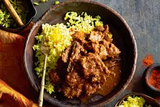

Mavrou recipe

Description
Mavrou is a well know South African dish, it is a classical
and traditional dish that is made with cubes of steak and is normally
served on special occasions.
Ingredients
- 4 T oil
- 5 onions
- 2 green peppers
- 4 chillies
- 5 cloves
- 5 bay leaves
- 5 allspice berries
- 4 cardamom pods
- 5 cinnamon sticks
- 2kg of cubed steak
- 8 cloves garlic
- 2 tomatoes
- 1 T ground cumin
- 1 T ground coriander
- 1 T ground black pepper
- 1 T sugar
- salt
- Rice, to serve with
Steps
- Combine the beef, ginger, garlic, cardamom, paprika,coriander, cayenne pepper,
turmeric, cumin, allspice and cinnamon in a glass bowl. Season and Cover.
Marinate in fridge for 1 hour.
- Heat oil in a saucepan over medium heat. Cook the onion for 5 minutes or until
light golden. Stir in the beef mixture for 5 minutes or until browned. Add the
stock, tomato and water. Bring to the boil. Reduce heat to low.
- Cook, partially covered, stirring often, for 1 hour 50 minutes or until beef is
almost tender. Uncover and simmer for 10 minutes or until mixture thickens slightly.
Serve with rice.